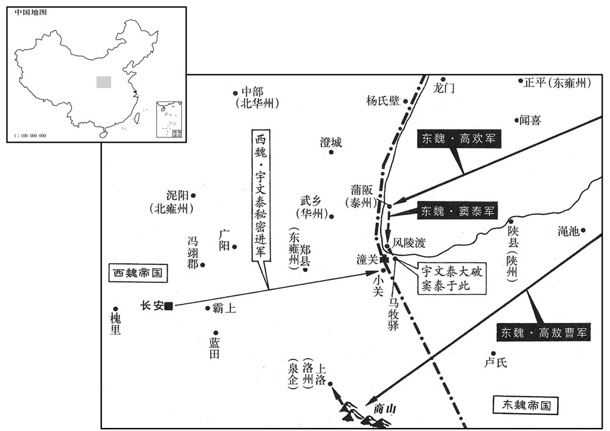

公元536年资治通鉴：本年记事、原文与白话对照
按原书编年位置阅读；追叙和史论不等于本年发生的事件。白话采用所据译本，缺译不以生成译文补齐。
卷157 · 本年记事
公元536年 · 梁高祖武皇帝大同二年
二年〔（丙辰、五三六）〕
本年事件索引（现代整理）
- 西魏文帝在南郊祭天，改以神元皇帝配享
- 东魏丞相高欢亲自率领一万名骑兵袭击西魏的夏州
- 西魏的灵州曹泥与他的女婿凉州普乐人刘丰又投降东魏
- 东魏孝静帝赐给丞相高欢九锡，高欢坚决推让
- 梁武帝为了使他已故的父亲文皇帝祈求冥福
- 梁武帝在藉田耕作
- 东魏勃海王高欢的嫡长子高澄，年仅十五岁
- 司马子如、高季式叫了孙搴一同痛饮，孙搴醉得不省人事
- 东魏丞相高欢命令阿至罗进逼西魏的秦州刺史万俟普
- 梁朝的丹阳人陶弘景卒
- 东魏任华山王元鸷为大司马
- 西魏任凉州史李叔仁为司徒，万俟洛为太宰
- 梁朝尚书右丞考城人江子四向梁武帝呈上用袋封好的秘密奏折
- 东魏的高盛卒
- 西魏的越勒肱卒
- 万俟普父子等叛西魏投东魏
- 东魏孝静帝下令大赦天下
- 梁武帝给予北魏降将贺拔胜等人优厚的待遇
- 东魏任定州刺史侯景兼任尚书右仆射、南道行台
- 西魏任扶风王元孚为司徒，斛斯椿为太傅
- 梁武帝颁下诏书命令大举讨伐东魏
- 西魏又重新改为尊始祖神元皇帝为太祖，道武皇帝为烈祖
- 东魏任并州刺史尉景为太保
- 东魏遣使请和，上许之
- 东魏的清河文宣王元卒
- 东魏的丞相高欢督率各路军队讨伐西魏
- 东魏任咸阳王元坦为太师
- 这一年出现了人吃人的现象

本年形势与背景参考图
春，正月，辛亥，魏祀南郊，改用神元皇帝配。〔魏高祖太和十六年，以太祖道武皇帝配南郊。神元皇帝，魏之先祖拓跋力微也；见晋武帝纪。〕
春季，正月辛亥（初九），西魏文帝在南郊祭天，改以神元皇帝配享。
甲子，东魏丞相欢自将万骑袭魏夏州，〔将，即亮翻。骑，奇寄翻。夏，户雅翻。〕身不火食，四日而至，缚抬为梯，〔抬，色角翻。〕夜入其城，擒刺史斛拔俄弥突，因而用之，留都督张琼将兵镇守，迁其部落五千户以归。
甲子（二十二日），东魏丞相高欢亲自率领一万名骑兵袭击西魏的夏州，一路急行军，没有停下生火做饭，跑了四天便赶到了目的地，他们将长矛绑起来结成云梯，连夜攻入城中，抓住了刺史斛拔俄弥突，高欢设法把斛拔俄弥突争取过来后又起用了他。接着，高欢留下都督张琼领兵镇守夏州，又下令迁移斛拔俄弥突部落中的五千户人家，由自己带着返回晋阳。
魏灵州刺史曹泥与其伲凉州刺史普乐刘丰复叛降东魏，〔魏置普乐郡，属灵州。五代史志：灵武郡回乐县，后周置，带普乐郡。宋白曰：灵州西南至凉州九百里。去年曹泥降魏，今复叛。乐，音洛。复，扶又翻。降，户江翻。〕魏人围之，〔考异曰：北齐书、典略皆云「周文围泥」，周书不言，故但云魏人。〕水灌其城，不没者四尺。东魏丞相欢发阿至罗三万骑径度灵州，绕出魏师之后，魏师退。欢帅骑迎泥及丰，拔其遗户以归，〔高欢岂不欲与宇文争灵州哉﹖虽鞭之长，不及马腹也。〕以丰为南汾州刺史。〔东魏置南汾州于定阳，隋改定阳县为吉昌县，唐为慈州治所。〕
西魏的灵州刺史曹泥与他的女婿凉州刺史普乐人刘丰又投降了东魏，西魏的兵马包围了他们，用水灌他们的州城，城外积水只差四尺就要淹过城头了。东魏丞相高欢派阿至罗三万名骑兵越过灵州，绕到西魏军队的背后出击，西魏的军队撤退了。高欢率领骑兵迎接曹泥与刘丰，并把他们遗留下的五千户人家迁到晋阳。高欢任命刘丰为南汾州的刺史。
东魏力丞相欢九锡；固让而止。
东魏孝静帝赐给丞相高欢九锡，高欢坚决推让，于是作罢。
上为文帝作皇基寺以追福，〔帝追尊考顺之曰文皇帝。为，于伪翻。〕命有司求良材。曲阿弘氏自湘州买巨材东下，南津校尉孟少卿欲求媚于上，〔据梁纪，普通六年，南州津改置校尉，增加奉秩。南州即今采石。校，户教翻。少，诗照翻。〕诬弘氏为劫而杀之，没其材以为寺。〔杀无罪之人，取其材以为寺，福田利益果安在哉！〕
梁武帝为了使他已故的父亲文皇帝祈求冥福，准备给他建造一座皇基寺，于是命令有关的官员去寻找上等的木材。曲阿人弘氏从湘州买了巨型木材往东边运送，南津校尉孟少卿想用这些木材向梁武帝献媚，就诬蔑弘氏是抢劫犯，杀掉了他，将他的木材没收后用来建造寺庙。
二月，乙亥，上耕藉田。
二月，乙亥（初四），梁武帝在藉田耕作。
东魏勃海世子澄，年十五，为大行台、并州刺史，〔中大通五年，魏以欢为大行台，欢以授其子澄。欢居晋阳，并州刺史地任要重，故亦以澄为之。〕求入邺辅朝政，〔朝，直遥翻；下同。〕丞相欢不许；丞相主簿乐安孙搴为之请，〔为，于伪翻；下为我同。〕乃许之。丁酉，以澄为尚书令，加领军、京畿大都督。〔考异曰：魏帝纪：「为尚书令、大行台、大都督。」北齐文襄纪：「天平元年，为尚书令、大行台、并州刺史；入辅朝政，加领军、左右京畿大都督。」按尚书令不在外，大行台不在内，今两舍之。〕魏朝虽闻其器识，犹以年少期之；〔少，诗照翻。〕既至，用法严峻，事无凝滞，中外震肃。引并州别驾崔暹为左丞、吏部郎，亲任之。
东魏勃海王高欢的嫡长子高澄，年仅十五岁，就已经成为大行台、并州刺史。他要求到国都邺城辅助处理朝中的政务，丞相高欢没有答应，丞相主簿乐安人孙搴替高澄请求，高欢这才同意。丁酉（二十六日），孝静帝任命高姵挝惺榱罴媪炀⒕╃艽蠖级健Ｎ撼舷滤淙欢荚潘牟拍苡胧都瑣但还是把他看成孩子，没想到高澄上任之后，执法严厉，办起事来雷厉风行，朝廷内外的人们都为此感到震惊，同时肃然起敬。高澄引荐并州别驾崔暹为左丞、吏部郎，非常亲近信任他。
司马子如、高季式召孙搴剧饮，醉甚而卒。〔卒，子恤翻。〕丞相欢亲临其丧。子如叩头请罪，欢曰：「卿折我右臂，〔折，而设翻。〕为我求可代者！」子如举中书郎魏收，欢以收为主簿。收，子建之子也。〔魏子建见一百五十卷普通五年。〕他日，欢谓季式曰：「卿饮杀我孙主簿，〔饮，于禁翻。〕魏收治文书不如我意；〔治，直之翻。〕司徒尝称一人谨密者为谁﹖」〔时东魏以高敖曹为司徒。〕季式以司徒记室广宗陈元康对，曰：「是能夜中闇书，快吏也。」召之，一见，即授大丞相功曹，掌机密，〔考异曰：典略，孙搴卒在大同十年四月。按搴卒然后陈元康为功曹。高慎叛，高澄已令元康救崔暹，邙山之战，元康又劝高欢追宇文泰，事并在九年。北史元康传又云，「草刘蠡升军书。」按蠡升灭在元年，孙搴二年犹存。今不取。然则搴卒宜置于澄入辅之下。〕迁大行台都官郎。时军国多务，元康问无不知。欢或出，临行，留元康在后，马上有所号令九十余条，元康屈指数之，尽能记忆。与功曹平原赵彦深同知机密，时人谓之陈、赵。而元康势居赵前，性又柔谨，欢甚亲之，曰：「如此人，诚难得，天赐我也。」彦深名隐，以字行。
司马子如、高季式叫了孙搴一同痛饮，孙搴醉得不省人事，一命呜呼。丞相高欢亲自到孙搴的灵堂哀悼。司马子如向高欢叩头请罪，高欢说道：“你折断了我的右臂，现在得替我找一个能够代替他的人！”司马子如举荐中书郎魏收，高欢便任命魏收为丞相主簿。魏收是魏子建的儿子。有一天，高欢对高季式说道：“你喝酒时害死了我的孙主簿，眼下魏收处理公文不合我的意，司徒曾经说一个人办事谨慎、严密，指的是谁？”高季式回答说是司徒记室广宗人陈无康，还介绍道：“他能够在夜间昏暗无光的情况下撰写公文，是一个办事麻利、效率很高的官员。”高欢把陈元康叫来，一见面就授予他大丞相功曹的官职，让他掌握机密要事，很快又提升为大行台都官郎。当时，国家的军政事务繁多，只要问到陈元康，陈元康没有不知道的。高欢有一次外出，临行前把陈元康带在身后，自己在马上下达了九十多条指示，陈元康屈着指头一一道来，都记得一清二楚。他与功曹平原人赵彦深一同掌握重要机密，当时的人们把他们称作陈、赵。陈元康的地位在赵彦深的前头，而且陈元康生性又很柔顺严谨，所以高欢跟他非常亲近，曾感叹道“这样一个人实在难得，是上天恩赐给我的。”赵彦深名叫赵隐，通常用表字。
东魏丞相欢令阿至罗逼魏秦州刺史万俟普，〔万，莫北翻。俟，渠之翻。〕欢以众应之。
东魏丞相高欢命令阿至罗进逼西魏的秦州刺史万俟普，高欢本人又率领了大队人马策应阿至罗。
三月，戊申，丹杨陶弘景卒。弘景博学多艺能，好养生之术。仕齐为奉朝请，弃官，隐居茅山。〔茅山在今建康府句容县南五十里。山记云：汉时有三茅君，各乘一鹤来此，故名焉。卒，子侐翻。好，呼到翻。朝，直遥翻。〕上早与之游，及即位，恩礼甚笃，每得其书，焚香虔受。屡以手敕招之，弘景不出。国家每有吉凶征讨大事，无不先谘之，月中尝有数信，〔月中，谓一月之中也。信，使信也。〕时人谓之「山中宰相」。将没，为诗曰：「夷甫任散诞，平叔坐论空。〔王衍，字夷甫；何晏，字平叔；以魏、晋谕梁也。诞，徒旱翻。〕岂悟昭阳殿，遂作单于宫！」〔弘景传曰：后侯景篡，果在昭阳殿。史言修道之士有识时知数者。〕时士大夫竞谈玄理，不习武事，故弘景诗及之。
三月，戊申（初七），梁朝的丹阳人陶弘景去世。陶弘景学识渊博，多才多艺，对养生术有特殊的兴趣。他在南齐担任过奉朝请的官职，后来又主动放弃，在茅山隐居起来。梁武帝早年曾经和他一同游处，等到登上皇位以后，总是给予他很不寻常的恩惠与礼遇，每次收到他的信，都要点上香后才虔诚地阅读。梁武帝多次亲自写信邀请陶弘景到朝廷做官，陶弘景始终没有出山。每当国家出现吉祥或不祥的征兆的时候，或有出征、讨伐这样大事的时候，梁武帝必定要先向他咨询，有时一个月里面两人要通好几封信，当时的人们称他是“山中宰相”。陶弘景去世之前，写了这样一首诗：“王衍任情放诞，何晏议论虚空。岂能想到昭阳殿，竟然作了单于宫。”那个时代，大小官员都竞相谈论玄理，不愿意学习练兵打仗方面的东西，所以陶弘景写诗用魏晋时期的事情来影射梁朝。
甲寅，东魏以华山王鸷为大司马。〔华，户化翻。〕
甲寅（十三日），东魏任命华山王元鸷为大司马。
魏以凉州刺史李叔仁为司徒，万俟洛为太宰。〔洛，字受洛干，亦曰寿乐干。受、寿同音，洛、乐亦同音。按北齐有太宰之官，仍晋制也；西魏用周制，置大耱宰，无太宰。〕
西魏任命凉州史李叔仁为司徒，万俟洛为太宰。
夏，四月，乙未，以骠骑大将军、开府同三司之仪元法僧为太尉。〔梁开府仪同三司之下，又有开府同三司之仪。〕
尚书右丞考城江子四上封事，极言政治得失，〔上，时掌翻。治，直吏翻。〕五月，癸卯，诗曰：「古人有言，『屋漏在上，知之在下。』朕有过失，不能自觉，江子四等封事所言，尚书可时加检括，于民有蠹患者，宜速详启！」〔江子四所上封事，必不敢言帝崇信释氏，而穷兵广地适以毒民，用法宽于权贵而急于细民等事，特毛举细故而论得失耳。〕
梁朝尚书右丞考城人江子四向梁武帝呈上用袋封好的秘密奏折，里面详尽地论述了国家在政治方面的得失。五月，癸卯（初三），梁武帝颁下诏书，说：“古人有一句话，叫做‘屋顶上漏雨，屋下人察觉’，我有过失的话，自己不一定察觉得到，江子四等人在密封的奏折中说到的情况，尚书可时时加以检查，凡是于人民有害的事，应该及时启奏。”
戊辰，东魏高盛卒。〔高盛，东魏太尉。〕
戊辰（二十八日），东魏的高盛去世。
魏越勒肱卒。〔越勒肱，魏司空。〕
西魏的越勒肱去世。
魏秦州刺史万俟普与其子太宰洛、豳州刺史叱干宝乐、右卫将军破六韩常及督将三百人奔东魏，〔阿至罗兵近，普等因之以东奔。考异曰：普降东魏事，北齐书帝纪在三月甲午，典略在六月。北史齐纪在六月甲午；周书帝纪、北史魏纪、齐纪在五月，今从之。按考异前既引北齐书帝纪，又引北齐纪，不应北史魏纪之下复出齐纪，必有误。〕丞相泰轻骑追之，至河北千余里，不及而还。〔河北，龙门西河之北也。还，从宣翻，又如字；下同。〕
西魏的秦州刺史万俟普与他担任太宰的儿子万俟洛、豳州的刺史叱干宝乐、右卫将军破六韩常以及他们所督率的将领三百人一起投奔了东魏，丞相宇文泰带着轻装的骑兵追赶，一直追到黄河以北一千多里的地方，但是没有追上，只好返回。
秋七月，庚子，东魏大赦。
秋季，七月，庚子（初一），东魏孝静帝下令大赦天下。
上待魏降将贺拔胜等甚厚，胜请讨高欢，上不许。胜等思归，前荆州大都督抚宁史宁谓胜曰：〔按宁传，宁居抚宁镇。考魏北镇无抚宁，恐即抚冥也。又按五代志雕阴郡开疆县有后魏抚宁郡，又有抚宁县，亦属雕阴郡。〕「朱异言于梁主无不从，请厚结之。」胜从之。上许胜、宁及卢柔皆北还，〔卢柔盖去年从胜来奔。〕亲饯之于南苑。胜怀上恩，自是见禽兽南向者皆不射之。〔射，而亦翻。〕行至襄城，东魏丞相欢遣侯景以轻骑邀之，胜等弃舟自山路逃归，〔胜等舟行，盖自淮入颍，自颍入汝，泝流而西，入山路，自三嵵取武关也。〕从者冻馁，道死者太半。〔从，才用翻。〕既至长安，诣阙谢罪，魏主执胜手歔欷曰：「乘舆播越，天也，〔乘，绳证翻。〕非卿之咎。」丞相泰引卢柔为从事中郎，与苏绰对掌机密。
梁武帝给予北魏降将贺拔胜等人优厚的待遇，贺拔胜请求带兵讨伐高欢，梁武帝没有允许。贺拔胜等人想回到北方去，前荆州大都督抚宁人史宁对贺拔胜说：“凡是朱异讲的话，皇上没有不听从的，请你好好地结交他。”贺拔胜接受了他的意见。后来，梁武帝允许贺拔胜、史宁以及卢柔都返回北方，还亲自在南苑为他们饯行。贺拔胜牢记着梁武帝的大恩，从此再看见往南面去的飞禽走兽，都不放箭射杀。他们路过襄城的时候，东魏的丞相高欢派遣侯景带着轻装骑兵前来拦截，贺拔胜等人丢弃了木船沿着小路逃了回去，跟随的人又冷又饿，有一大半死在了路上。他们历尽千辛万苦，到达长安之后，去皇宫请罪，西魏文帝拉住贺拔胜的手，一边抽泣一边说：“朕流离颠沛，这是天意，不是你们自己的过错。”丞相宇文泰推荐卢柔为从事中郎，与苏绰一道掌握重要机密。
九月，壬寅，东魏以定州刺史侯景兼尚书右仆射、南道行台，督诸将入寇。〔将，即亮翻。〕
九月，壬寅（初四），东魏任命定州刺史侯景兼任尚书右仆射、南道行台，督率各位将领侵犯梁朝。
魏以扶风王孚为司徒，斛斯椿为太傅。
西魏任命扶风王元孚为司徒，斛斯椿为太傅。
冬，十月，乙亥，诏大举伐东魏。东魏侯景将七万寇楚州，〔魏收志：梁置楚州，治楚城，领汝阳、仵城、城阳郡。五代志：汝南城阳县，梁置楚州。〕虏刺史桓和；进军淮上，南、北司二州刺史陈庆之击破之，景弃辎重走。〔重，直用翻。〕十一月，己亥，罢北伐之师。
冬季，十月，乙亥（初八），梁武帝颁下诏书命令大举讨伐东魏。东魏的侯景统率七万兵马入侵楚州，俘虏了刺史桓和；接着又向淮河的上游地区进军，南、北司二州的刺史陈庆之击败了这支东魏部队，侯景丢弃了各种不便随身携带的军用物资，逃跑了。十一月己亥（初二），梁武帝下令让讨伐北方的部队停止进军。
魏复改始祖神元皇帝为太祖，道武皇帝为烈祖。〔魏改二祖庙号，见一百三十七卷齐武帝永明九年。复，扶又翻。〕
西魏又重新改为尊始祖神元皇帝为太祖，道武皇帝为烈祖。
十二月，东魏以并州刺史尉景为太保。
十二月，东魏任命并州刺史尉景为太保。[25]壬申，东魏遣使请和，上许之。
壬申，东魏遣使请和，〔使，疏吏翻。〕上许之。
本段缺少可靠对应白话，原文完整保留；未使用生成译文。
东魏清河文宣王亶卒。〔考异曰：国典云，「亶为高欢所酖」。典略，周太祖数欢罪，亦云杀亶。魏书、北史皆无亶传；而帝纪皆云亶薨，今从之。〕
东魏的清河文宣王元去世。
丁丑，东魏丞相欢督诸军伐魏，遣司徒高敖曹趣上洛，大都督窦泰趣潼关。〔趣，七喻翻。〕
丁丑（十一日），东魏的丞相高欢督率各路军队讨伐西魏，派遣司徒高敖曹前往上洛，大都督窦泰前往潼关。
癸未，东魏以咸阳王坦为太师。
癸未（十七日），东魏任命咸阳王元坦为太师。
是岁，魏关中大饥，人相食，死者什七八。
这一年，西魏的关中地区发生了大饥荒，出现了人吃人的现象，每十人之中就七八个死去。
译本所载内容待核对（不作白话）
[13]夏，四月，乙未，以骠骑大将军、开府同三司之仪元法僧为太尉。
[25]壬申（初六），东魏派遣使者去梁朝求和，梁武帝答应了。